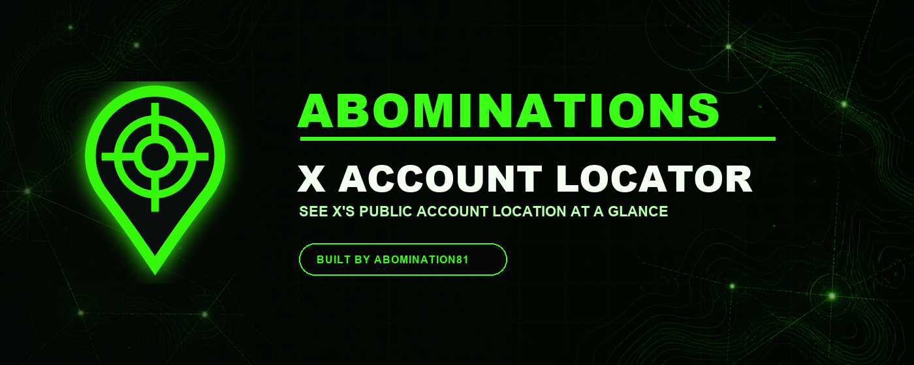
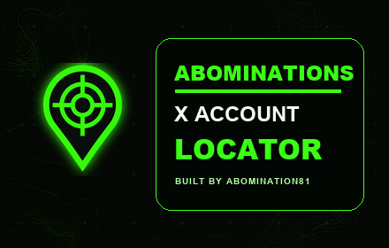
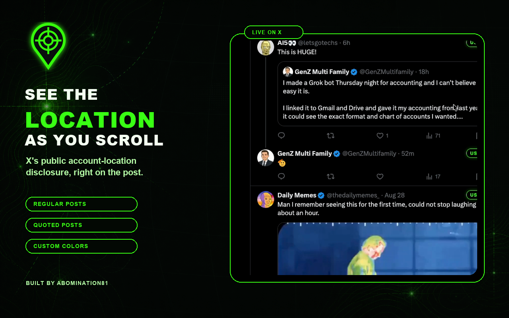

Use the popup
Pin the extension from Chrome's puzzle-piece menu, then click its green crosshair icon to:
- Choose a badge color
- Pause or resume lookups
- View lookup and rate-limit status
- Clear the local cache

Free manual Chrome installation. No Chrome Web Store account or publisher email is required.
Built by Abomination81
The extension places X's public Account based in disclosure on ordinary and quoted posts. Choose any badge color; Abomination green is the default.

About two minutes
chrome://extensions into Chrome's address bar and press Enter.Abominations-X-Account-Locator folder—not the ZIP file.Live on X

Pin the extension from Chrome's puzzle-piece menu, then click its green crosshair icon to:
There is no developer-operated server, advertising, analytics, or data brokerage. Requests needed for the feature go only to X and X's asset domain through your existing X session. Settings and the bounded lookup cache stay in Chrome's local extension storage.
X says its account-location field is inferred from aggregated IP addresses. It may be inaccurate and is not proof of nationality, identity, physical presence, or who controls an account.
Update: Download the latest ZIP, replace the old folder, open chrome://extensions, click Reload on the extension card, and refresh X.
Remove: Open chrome://extensions and click Remove. Chrome also removes the extension's local settings and cache.